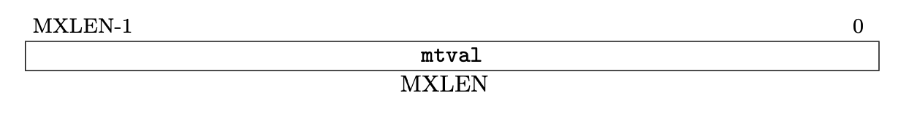
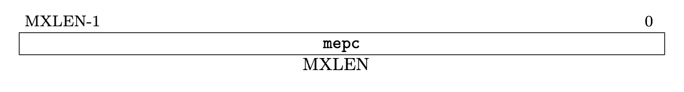
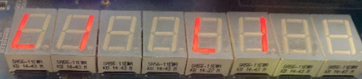

Lab4-4
前置知识
Exception and Interruption
在 Volume I: RISC-V Unprivileged ISA V20191213 第 1.6 节，有对 exception 和 interruption 的解释：
We use the term exception to refer to an unusual condition occurring at run time associated with an instruction in the current RISC-V hart. We use the term interrupt to refer to an external asynchronous event that may cause a RISC-V hart to experience an unexpected transfer of control. We use the term trap to refer to the transfer of control to a trap handler caused by either an exception or an interrupt.
为了方便文档描述，下文中我们用“中断”指代 interruption，用“异常”指代 exception，用 trap 表示中断与异常。
Control and Status Registers(CSRs)
在 32 个通用寄存器之外（即 x0 - x31），还有若干控制状态寄存器(Control and Status Register, CSR)。在我们的实验中，CPU 始终运行在 Machine Mode 下，在本实验中我们只需要关注 Machine Mode 下的部分 CSR。
对于每个 CSR 的详细介绍，请查看 Volume II: RISC-V Privileged Architectures V20211203，这里仅对我们本次实验需要用到的 CSRs 进行简介：
- mstatus： Machine Status Register，存储当前控制状态。

- 本次实验中你可以做相对简化，只要可以保证在中断处理过程中不会触发新的中断即可。
- mtvec： Machine Trap-Vector Base-Address Register，存储中断向量表基地址。

- 低两位记录跳转模式，
0为 Direct 模式，即所有 trap 都先进入BASE；1为 Vectored 模式，将进入BASE + 4*cause。高位记录的是BASE的值（请注意对齐，BASE << 2才是真正要跳转的地址）。 - 本次实验中，要求使用 Vectored 模式，因为我们并没有要求实现
csrr等指令。
- mcause： Machine Cause Register，存储引起这次 trap 的原因。

- 如果进入 trap 的原因是中断，则最高位 interrupt bit 设置为 1。
- 本次实验允许你自由的设计 Exception Code 的含义，在实验报告中说明即可。
- mtval： Machine Trap Value Register，存储异常的相关信息以帮助软件处理异常，曾称 mbadaddr。
- 
- 在本次实验中没有用到，可以不进行实现，除非你希望完成存储器访问异常（本节实验的 bonus 内容）。
- mepc： Machine Exception Program Counter，存储 trap 触发时将要执行的指令地址，在
mret时作为返回地址。- 
- 本次实验不涉及 PC 非对齐异常，因此不需要考虑将跳转指令的目标地址送入
mepc的情况。 - 需要注意的是，在一般的实现中，你需要在 trap 处理程序中检查
mcause寄存器，如果是异常则更新mepc <- mepc + 4，这部分不是你的硬件实现，而是由软件（你的 trap 处理程序）进行管理的。但是，本次实验并不要求实现csrw等指令，因此我们要在RV_INT模块中直接管理mepc，即触发 trap 时直接根据触发信号（是不是INT）来决定mepc <- pc还是mepc <- pc+4。
trap
进入 trap 时，硬件需要负责修改若干 CSR 并将 PC 调整为 trap 处理程序的第一条指令位置（保存在 mtvec 中）。
- 更新
mcause，记录当前是不是中断，并记录 exception-code。 - 更新
mstatus，防止在 trap 处理时又触发中断。 - 更新
mepc，记录当前指令的地址。再次提醒，本实验中硬件RV_INT模块将直接管理mepc是否自增，如果触发的原因是中断，则mepc <- pc，否则mepc <- pc+4。
为了简化实验，在进入 trap 后，你不需要保存当前现场（寄存器值等），只需要使用验收代码中没有用到的寄存器即可。
实验要求
本实验需要修改硬件（添加 RV_INT 模块，修改 Datapath）以及软件（修改验收代码，实现 trap 处理）。
修改 SCPU_ctrl 模块用来检查 ecall 指令和非法指令，并给出相应信号接入 Datapath 中。
添加 VGA 模块的 debug 信号，至少需要 mstatus, mcause, mepc, mtvec 的值。
你需要设计实现三种 trap：外部中断、 ecall 指令和非法指令。
- 外部中断，升起
INT信号，你可以设置某个开关来引起外部中断。引起外部中断时，你需要在七段管上打印出以下图形： ecall指令，因为我们并没有实现特权架构，这里ecall指令仅用来作为触发相应中断的信号。当进行ecall时，你需要在七段管上打印出以下图形：- 非法指令，如果将要执行的指令是非法的，则触发非法指令异常。你需要在七段管上打印出以下图形：
- 

如何在图形模式下打印将在软件实现一节说明。
模块实现
中断处理主要是改变了指令流，由正常的指令运行切换到 trap 处理程序的执行，最终回到正常的指令流中继续执行。为此，我们需要设计一个模块，用来接收控制信号或外部信号，判断下一条要执行的指令是正常指令流运行还是 trap 处理的指令；同时，还需要修改 Datapath 以支持 PC 来源的改变。
| RV_INT.v | |
|---|---|
这一模块中，你需要保存并管理 mstatus, mtvec, mcause, mtval, mepc 等 CSRs。实现模块时，需要时刻注意：
mtvec的值要与你所写代码中 trap 处理程序首条指令位置相同，如果你改变了代码，需要检查是不是需要修改mtvec的值。- 如果正在进行 trap 处理程序（还未执行
mret），不接受其他 trap。 - 根据不同的中断信号，对 CSRs 进行修改，再次提醒，我们的简单实现中，需要硬件对
mepc的具体取值进行管理。 - 请注意设置 CSRs 的初始值，并注意
rst时恢复初始值。
软件实现
你需要修改 Lab4-3 提供的验收代码，实现 trap 处理程序以及三种对应的处理程序。
trap 处理程序
一个简单的方式是放置若跳转指令，在 trap 处理程序中跳至相应中断 / 异常的处理程序中。如果你使用 Vectored 模式，并将三种 trap 的 exception code 分别设置为 1, 2, 3，你的代码应该类似于：
# mtvec.BASE = 0x0
# mtvec.MODE = 1(Vecotored mode)
jal x0, main # PC = 0x0, 正常程序的入口
jal x0, ill_trap # PC = 0x4, 进入非法指令处理程序
jal x0, ecall_trap # PC = 0x8, 进入 ecall 处理程序
jal x0, int_trap # PC = 0xC, 进入外部中断处理程序
图形模式下的打印
目前提供的七段数码管 IP 核仅能支持打印一半的图形（4 个），另一半是拷贝。
输入的 Disp_num 到打印图形的映射如下：
module SSeg_map(
input[31:0]Disp_num,
output[63:0]Seg_map
);
assign Seg_map = {
Disp_num[0], Disp_num[4], Disp_num[16], Disp_num[25],
Disp_num[17], Disp_num[5], Disp_num[12], Disp_num[24],
Disp_num[1], Disp_num[6], Disp_num[18], Disp_num[27],
Disp_num[19], Disp_num[7], Disp_num[13], Disp_num[26],
Disp_num[2], Disp_num[8], Disp_num[20], Disp_num[29],
Disp_num[21], Disp_num[9], Disp_num[14], Disp_num[28],
Disp_num[3], Disp_num[10],Disp_num[22], Disp_num[31],
Disp_num[23], Disp_num[11],Disp_num[15], Disp_num[30],
// Copied right part
Disp_num[0], Disp_num[4], Disp_num[16], Disp_num[25],
Disp_num[17], Disp_num[5], Disp_num[12], Disp_num[24],
Disp_num[1], Disp_num[6], Disp_num[18], Disp_num[27],
Disp_num[19], Disp_num[7], Disp_num[13], Disp_num[26],
Disp_num[2], Disp_num[8], Disp_num[20], Disp_num[29],
Disp_num[21], Disp_num[9], Disp_num[14], Disp_num[28],
Disp_num[3], Disp_num[10],Disp_num[22], Disp_num[31],
Disp_num[23], Disp_num[11],Disp_num[15], Disp_num[30],
};
endmodule
其中 Disp_num 为我们需要提供的 32-bit 值，Seg_map 是最终打印出来的图形，0 为亮。现在我们可以设计出来希望打印的图形，因此需要通过这个图形的逆映射得到输入给 Sseg7 的 Disp_num 值。
举个例子，我们希望在从左往右数第三个数码管上绘制一个矩形，可以很容易得到 Seg_map 的值应该为 0xFFFF39FF，它只会点亮第三个数码管的 a, b, f, g，即一个小矩形。通过逆映射，我们得到 Disp_num 值为 0xFFFFBCFB。另一个例子，打印第二位上的小矩形 Seg_map: 0xFF39FFFF ---> Disp_num: 0xFFFFDF3D。
这一步中，你需要得到希望打印三种 trap 的图形的 Disp_num 值。你需要查看验收代码，学习如何将这个值送入七段数码管最终显示一个图形。
请注意，在每个处理程序的末尾，你需要一个 mret 指令告知 RV_INT 模块中断处理已经结束，需要恢复正常的指令流并对必要的 CSR 进行修改。
必要的检查
在完成以上所有步骤后，请检查：
RV_INT模块中的mtvec.BASE是否指向了 trap 处理程序的首个指令。- 我们需要实现 Vectored 模式，
RV_INT模块中mtvec.BASE + 4*cause是否能跳到正确的处理程序。 - 请确保你在某个模式的处理下放置了
ecall指令；在某个模式的处理下放置了一条非法指令。 - Venus 平台无法为你解析
mret，请自行书写，并注意 trap 中断处理程序的结尾一定要有mret。- 为了不修改 trap 处理程序的跳转指令，你可以在原本
mret的地方写一条 NOP 语句add x0, x0, x0来占一条指令的位置，在之后将它替换为mret。
- 为了不修改 trap 处理程序的跳转指令，你可以在原本
- 查看原验收代码的
148, 149行，确保这里的jalr能够跳转到loop2。- 请修改
0x150, 0x24到合适的值，而不要修改其他部分。
- 请修改
- 查看原验收代码的
auipc指令，可能需要改动避免进入 dummy。
Lab4 思考题
这么重要的实验怎么能没有
思考题 ( 呢？)
- 在涉及到一个大立即数的读入时，我们经常能想到使用
lui & addi来实现，比如下面这段代码就将0x22223333赋给了t0: 你是否能通过以下代码得到0xDEADBEEF？如果你觉得不能的话，先解释为什么不能，再修改代码中的一个字符，使得以下代码有效地得到0xDEADBEEF。（如果你觉得可以的话，请重新学习 RISC-V ISA） btw, 如果你把上边代码放到 Venus 上，会发现它给了你一个报错，不要理会它，它理解错了。 - 之前我们一直在说，如果 trap 的诱因是
Exception则需要mepc <- PC+4，如果是Interruption则需要mepc <- PC。这是为什么呢？或者说，如果Exception时进行mepc <- PC，Interruption时mepc <- PC+4会有什么不幸的后果？